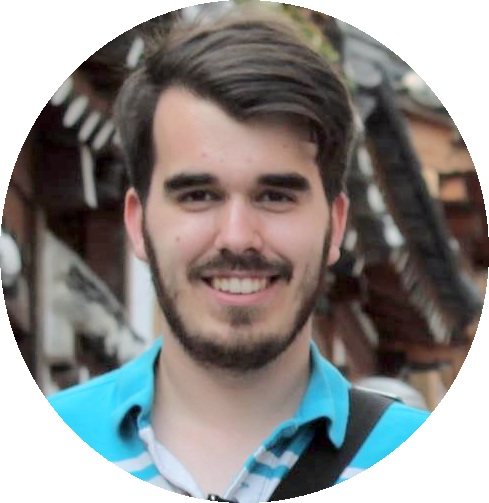
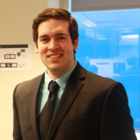

Le 24 octobre 2015 À ne pas manquer!
Bienvenue aux scientifiques, développeurs, étudiants, passionnés et/ou curieux, pour la 1ère Conférences JDIs, succédant fièrement à trois APIUS avec la même formule. Vous voulez rencontrer des gens de toutes sortes et de tous horizons, vous faire un réseau de contact professionnel ou amical, vous trouver un stage, un stagiaire ou simplement passer du bon temps avec du bon monde? C’est à Conférences JDIs en octobre 2015 que ça se passe!
Venez écouter et rencontrer des conférenciers de marque en compagnie d’un groupe de personnes dynamiques pour discuter de technologie et enrichir vos connaissances sur les langages fonctionnels. Une introduction à ces langages est prévue afin de permettre à tous de se familiariser avec ce langage, avant d’aborder des thèmes plus poussés.
Vous aurez l’opportunité de participer à la scène technologique Sherbrookoise, dans une ambiance décontractée et invitante qui a fait le succès des APIUS. Boissons et repas vous seront offerts gratuitement. Nous vous attendons en grand nombre!
... et en plus, c'est totalement gratuit!
Horaire
| 8h45 | Accueil - Déjeuner |
| 9h30 | Mot d'introduction |
| 9h40 | Introduction aux langages fonctionnels |
| 10h15 | Antoine Savage - Haskell |
| 11h15 | Pause |
| 11h30 | Pierre Racz - Le langage détermine ce dont vous devez penser |
| 12h30 | Dîner |
| 13h20 | Félix-Antoine Ouellet - La prog fonctionnelle en C++ |
| 14h20 | Alexandre L'Heureux & Ioannis Fytilis - Scala: Développent multi-paradigme |
| 15h20 | Pause |
| 15h40 | Jean-René Bélanger - Imeka |
Invités
Pierre Racz
PRESIDENT AND CEO Pierre Racz is the principal co-founder and CEO of Genetec. Since 1997, with the introduction of IP video surveillance for the physical security and public safety industry, the company has grown into a global provider of world-class unified IP video management solutions. Prior to founding Genetec, Pierre was a Principal Engineer at DMR (Fujitsu Consulting), a systems integration house with worldwide presence. With over 30 years of hardware and software development experience, Pierre holds extensive knowledge in the physical security industry. Today, Pierre is actively involved in the formulation of the company’s objectives as well as the execution of its worldwide strategies.
Félix-Antoine Ouellet
Depuis la fin de son bacc en informatique en 2013, Félix-Antoine poursuit une rocambolesque maitrise dans le domaine des compilateurs et des systèmes parallèles à mémoire distribuée. Parallèlement (haha) à sa maitrise, il travaille depuis peu chez InnovMetric Logiciels Inc en tant que développeur logiciel. Compte tenu que ces activités lui laissait encore du temps pour dormir, il s'implique également sur le projet Tostitos visant à abattre NachOS pour apporter plus de joie aux étudiants du cours de système d'exploitation à travers le monde.
Voici quelques liens:
- Le site de son employeur: http://www.innovmetric.com/fr
- Le repo de Tostitos: https://github.com/Alex-B09/Tostitos
Antoine Savage
Antoine a terminé en 2014 ses études universitaires au cours desquelles il s'est découvert un intérêt pour le Haskell et autres langages fonctionnels. Il travaille depuis comme développeur backend pour une entreprise québécoise, Ludia Inc, où il conçoit et développe des systèmes distribués hautement concurrents basés sur des paradigmes fonctionnels.
Alexandre L'Heureux
Alexandre a gradué de l'université de Sherbrooke en génie informatique à la fin de 2011. Il travaille depuis chez Morgan Stanley où il développe des applications backend en Scala. Il a travaillé sur des applications dont la charge allait jusqu'à des milliers de messages par seconde et des applications pouvant interagir avec les marchés boursier de manière autonome.
Ioannis Fytilis
Ioannis a gradué de l'université de McGill en science informatique en 2014. Tout d'abord stagiaire et ensuite employé de Morgan Stanley depuis la fin de ses études, il travaille sur un moteur de recherche en Scala, utilisé par plus de 17 000 conseillers en investissement. C'est lors de la conception d'un compilateur à l'aide d'un langage fonctionnel qu'il s'est découvert une passion pour ce paradigme.
Jean-René Bélanger
Directions
Pour vous rendre au Campus principal de l’Université de Sherbrooke, à partir de Montréal: Prendre l’autoroute 10 et ensuite la 410, sortir sur le boul. Université et tourner à droite sur le boulevard jusqu’à l’université.
Stationnements gratuits dans le PA-8 et le PB-3
L’Agora du Carrefour de l’Information (local B1-2002) est situé au 2e étage du bâtiment B1, au centre du Campus (voir le plan).